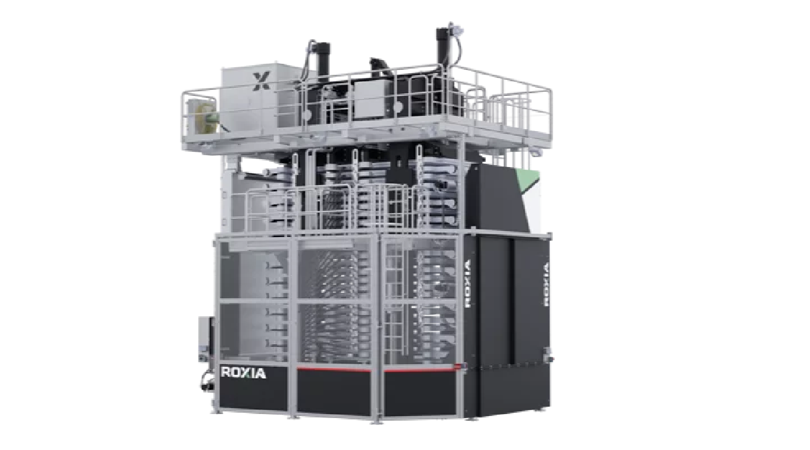

EMPRESA FINLANDESA ESPECIALISTA EN
SEPARACIÓN DE SÓLIDOS-LÍQUIDOS
-DEWATERING & AUTOMATION-
MARCA EL RETORNO AL MERCADO MUNDIAL
del fabricante finlandés Creador del 1er Filtro Torre de Prensa Vertical (1977), con sub
nueva marca y con una alianza estratégica con
PARA LIDERAR UNA NUEVA GENERACIÓN
DE EQUIPOS DE FILTRADO
221
CLIENTES GLOBALES
56,757
PRODUCTOS ENTREGADOS
El filtrado de tu empresa
en nuestras manos
Vendemos equipos nuevos de filtrado tanto automáticos como manuales.
También ACTUALIZAMOS / ACONDICIONAMOS sus viejos equipos,
soluciones A MEDIDA.
Nos encargamos de los procesos de separación SOLIDOS / LIQUIDOS
Nosotros
Con más
de 40 años
de experiencia
En 1977 fundamos la empresa LAROX Oy para especializarnos en Filtros Prensa y Válvulas Pinch. Después de convertirnos en líderes de ese mercado, en 2009 se vendió la marca LAROX Oy a Outotec y se creó FLOWROX para dedicarse a Bombas y Válvulas pinch.
FLOWROX se desempeñó exitosamente hasta que en 2021, se tomó la decisión de retornar al Negocio de los Filtros Prensa, causa por la cual, se vendió a Neles Oy.
En 2021 con la misma Planta en Lappeenranta, Finlandia y prácticamente el mismo personal de nuestros comienzos en 1977, se decidió crear ROXIA Oy para REENFOCARSE en el Negocio de Filtros Prensa - Separación Sólidos / Líquidos - Dewatering. Además se compró el 50 % de AQUACHEM para convertirla en: a ROXIA Brand e iniciar una NUEVA GENERACIÓN de Filtros Prensa.
En procesos de separación sólido-líquido, ofrecemos soluciones integrales que destacan por su calidad y eficacia.
Nuestros servicios abarcan desde un exhaustivo análisis de procesos y pruebas de filtrado, hasta la entrega e instalación del filtro correspondiente.
Asimismo, brindamos entrenamiento especializado y acompañamiento continuo durante todo el ciclo de vida del equipo, garantizando una rápida entrega de repuestos y soporte técnico eficiente.
Roxia en Argentina
Roxia ha establecido una Cobertura Global con Oficinas en muchos países del mundo. En Argentina, contamos con una Oficina Roxia con Ingenieros Especializados y un Depósito local de Repuestos OEM en Stock en Santiago, Chile, a solo una hora de vuelo de cualquier punto de nuestro país.

Test de filtración, con el fluido real a procesar, para asegurar el diseño y equipo adecuado.
Fecuentes inspecciones planificadas para prevención de fallas y mejora de performance.

Reducir tiempos de espera de repuestos y tiempos de parada de plantas.

Entrenamientos al personal de nuestros clientes para mejorar la operación de filtrado.
Equipos
TP60 - TP16
Tecnología de filtración horizontal a presión
El Tower Press™ de Roxia es un filtro de presión completamente automático, excelente para cualquier proceso que requiera de una separación eficiente de sólidos y líquidos. El diseño tiene 40 años de respetable experiencia en el campo. El filtro Tower Press de Roxia es una máquina confiable de producción que ofrece un alto rendimiento. Roxia tiene dos tipos de Tower Press: TP60, más grande, con un área de filtración de 48m² a 156m², y TP16, más pequeña, con un área de filtración de 16m² a 44m².
SFP - SMART FILTER PRESS
Filtro prensa automático, con mínimo consumo de mano de obra
La SFP corresponde a la nueva generación de filtros prensa: filtro autolimpiante totalmente automático. Brinda funcionamiento libre de problemas
sin participación de operadores.
Disponibilidad sin personal sobre el 98%
Baja necesidad de mantenimiento
Superficie de filtración entre 1,2 - 22,3 m²
Completamente sellado para un ambiente limpio
Producción de hasta 1 t/hora